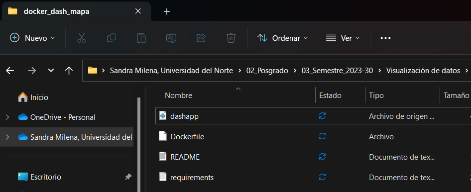

Despliegue de aplicaciones con Docker#
Desplegar un dashboard creado en Dash en un contenedor Docker es una forma eficaz de distribuir y ejecutar tu aplicación en diferentes entornos sin preocuparnos por las diferencias en las configuraciones del sistema. Dockerizar un tablero dash es muy fácil, sólo tienes que añadir un Dockerfile con un par de líneas de instrucciones, construir un contenedor con él, y ejecutarlo. El proceso comienza con el uso de una aplicación Dash probada localmente. Luego, se crea un Dockerfile, que contiene instrucciones para construir un contenedor Docker que hospedará el dashboard.
A continuación, se proporcionará un resumen de los pasos empleados para desplegar dos ejemplos de dashboard Dash en Docker:
Creación del directorio#
Se creó una carpeta en donde se alojarán todos los archivos requeridos para el despliegue de cada aplicación, incluyendo un archivo .py que contenga la aplicación, un README, un archivo de requerimientos .txt y el Dockerfile.

Figura 1. Creación del directorio donde se guardan todos los archivos requeridos para el despliegue
Configuración de un entorno dedicado#
Antes de dockerizar el dash es recomendable crear un ambiente de dedicado, con el propósito de consumir menos recursos y optmizar el proceso de visualización. Para ello, se utiliza el siguiente código desde la consola Anaconda Powershell:
conda create --name dashdocker_venv python=3.9
Una vez creado, debe activarse con el siguiente comando
conda activate dashdocker_venv
Luego se ubica el directorio de la carpeta donde se guarda la aplicación
cd "C:\Users\Sandra\OneDrive - Universidad del Norte\02_Posgrado\03_Semestre_2023-30\Visualización de datos\Tarea2\docker_dash_mapa"
ls